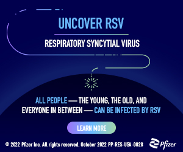
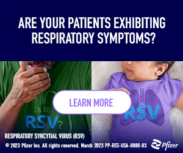
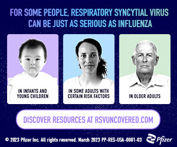
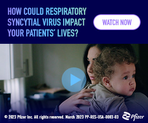
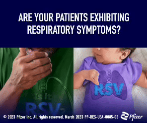
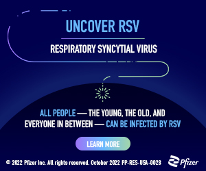
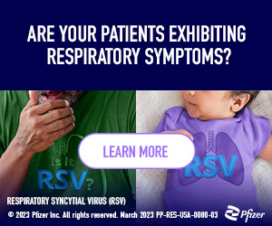
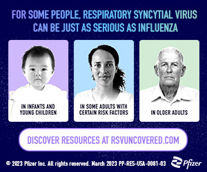
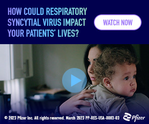
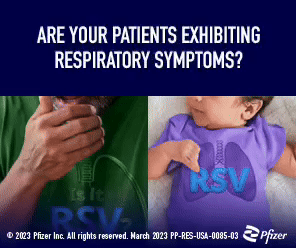

RSV Uncovered Campaign
Our client, Pfizer’s US RSV franchise, requested an engagement strategy and drivers for the unbranded microsite RSVuncovered.com. This campaign stressed the importance of RSV prevention and provided information on which patients are at a higher risk for severe RSV.
Contributions
Dynamic & Static Ads
Aligning with the RSV Uncovered brand and messaging, we provided various ad concepts that represent both maternal women and older adult demographics. To extend the audience reach, we developed various ad sizes to accommodate both desktop and mobile presentations. These drivers engaged viewers through bold headlines and intriguing animations.
 









Email Communications
We also developed email templates targeting pharmacists and physicians with various CTAs for A/B testing. These emails included critical statistics surrounding RSV and encouraged viewers to learn more by engaging in a quiz or watching a video.